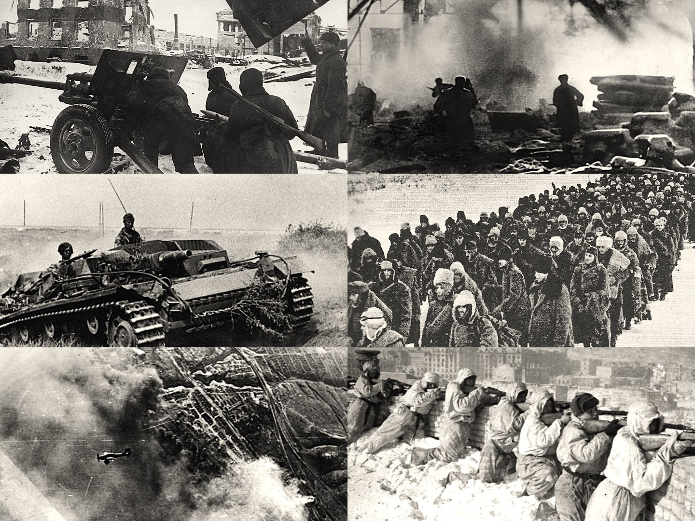
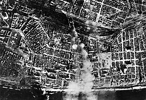
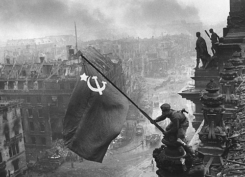
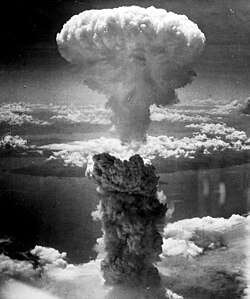

US Army soldiers of the 1st Infantry Division wade ashore at Omaha Beach under German fire, June 6, 1944. This iconic photograph by Robert F. Sargent captures the opening moments of the liberation of Western Europe.

Stalingrad — City of Death, 1942–43
The Battle of Stalingrad reduced the city to rubble. Soldiers fought room-by-room in "Rattenkrieg" (rat war). Over 2 million people died in this single battle — the bloodiest in human history.
Urban Combat at Stalingrad
German infantry advances through the shattered streets of Stalingrad, 1942. The city's ruins provided cover for Soviet defenders who traded lives for time, waiting for the encirclement to close.

Luftwaffe Bombing Stalingrad, 1942
German aircraft bomb Stalingrad in August 1942. The Luftwaffe reduced the city to rubble before the ground assault — ironically creating perfect defensive terrain for Soviet troops.

Victory over the Reichstag, Berlin, 1945
Soviet soldiers raise the Red Banner over the ruins of the Reichstag on May 2, 1945 — one of the most iconic images of WWII. The photograph by Yevgeny Khaldei symbolized the fall of Nazi Germany.

Atomic Bomb over Nagasaki, 1945
The mushroom cloud from the "Fat Man" plutonium bomb rose 18km above Nagasaki on August 9, 1945. The blast killed 40,000 instantly and up to 80,000 by year's end. Japan surrendered six days later.
Ju 87 Stuka — The Blitz Symbol
Junkers Ju 87 Stuka dive bombers in formation. Fitted with "Jericho trumpets" wind sirens, the Stuka's screaming dive became a symbol of German Blitzkrieg terror across Europe and North Africa.
Nuremberg Rally — The Third Reich
Hitler addresses the Nazi Party at the Nuremberg Rally. The annual rallies, staged by Albert Speer as "cathedrals of light," showcased the full spectacle of totalitarian propaganda and military might.